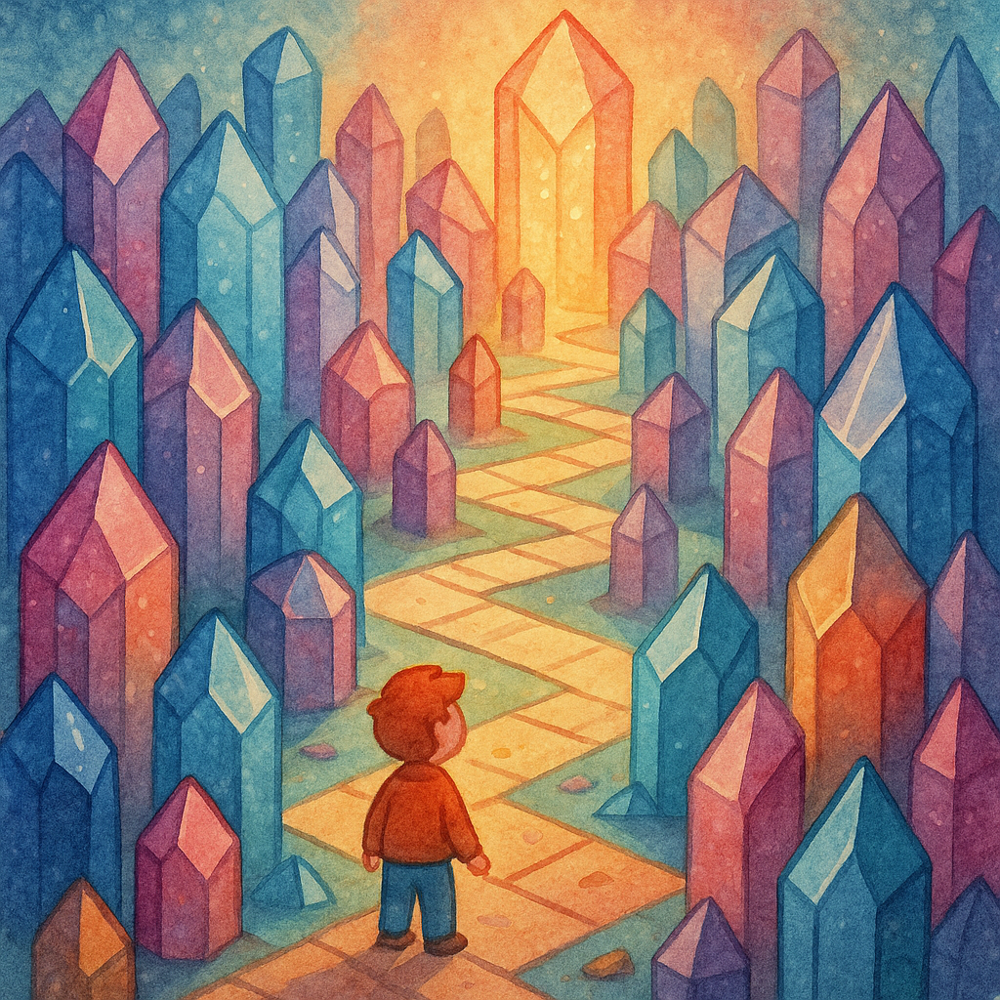
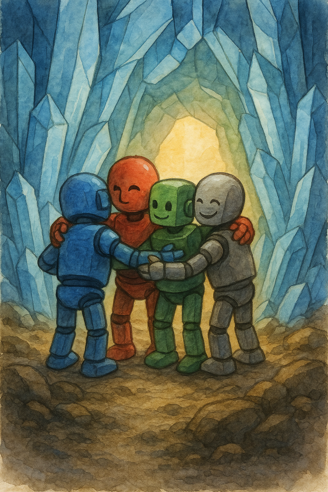

Пролог
После маяка и откровения о Пятой стихии на борту «Искры» было странно тихо. Каждый из био‑вотчкаров думал о своём.
— Нас должно быть пятеро, — тихо сказал Аквас, разглядывая отражение в стекле. — Но кто этот Материос?
— И где его искать, — буркнул Драгос. — Космос огромный.
Ветрос крутил штурвал, будто это помогало думать. — Иногда искать нужно не то, что видно. А то, что прячется.
Террос сидел неподвижно, как всегда. И вдруг сказал: — Я знаю одно место, где можно потеряться — даже если не хочешь.
И назвал координаты.
Лабиринт
Планета оказалась гладкой, словно стеклянной. Но это было только снаружи. Под поверхностью тянулся лабиринт — кристаллический, переливающийся всеми цветами. Он тянул к себе, как магнит.
— Чувствуете? — спросил Аквас. — Здесь кто‑то… зовёт.
— Не кто‑то, — сказал Террос. — Что‑то.
Они вошли.
Обман
Сначала всё было похоже на обычный путь: коридоры, стены, сияние. Но потом началось странное.
Ветрос увидел впереди Драгоса — и тот сказал: — Ты мне мешаешь. Ты слаб. Без тебя мы были бы быстрее.
— Что? — ошарашился Ветрос.
Драгос же обернулся и увидел Ветроса, который шепнул: — Ты сам всё время сдерживаешь нас. Ты тормозишь команду.
Аквасу показалось, что Террос холодно произнёс: — Тебя никто не слушает. Ты всегда будешь вторым.
А Террос услышал совсем другое: — Ты снова станешь оружием тьмы. Ты всегда ею был.
Каждое слово било, как удар.
Страх
Они начали спорить. Голоса становились громче, движения резче.
— Ты это сказал?! — крикнул Ветрос на Драгоса.
— Нет! Это ты сказал! — огрызнулся Драгос.
Кристаллы усиливали каждое слово, отражали их, будто издеваясь. Лабиринт жил их ссорами.
Аквас зажал уши. — Это не мы! Это… он!
И тогда они поняли.
Осознание
— Это лабиринт, — сказал Террос. — Он не строит стены. Он строит… слова.
— Иллюзии, — добавил Аквас. — Он показывает нам не врагов, а страхи.
Они замерли.
Драгос закрыл глаза. — Я боялся, что однажды мой огонь сожжёт вас.
Ветрос выдохнул. — А я боялся, что без меня вы будете лучше.
Аквас опустил голову. — Я думал, что никто меня не слушает.
Террос сказал глухо: — Я боюсь снова стать их оружием.
Кристаллы перестали пульсировать. Сияние стало мягким. Иллюзии растаяли.
Выход
Они нашли центр лабиринта. Там стоял огромный кристалл — источник всех обманов. Но теперь он не был страшным. Он был… пустым.
— Он не злой, — сказал Аквас. — Он просто отражает то, что мы прячем.
Они оставили его нетронутым. Пусть отражает, но не вредит.
Последствие
Когда «Искра» уходила с планеты, они сидели молча.
— Знаете, — сказал Ветрос, — я всё ещё боюсь, что я… мешаю.
Драгос посмотрел на него. — А я всё ещё боюсь сжечь вас.
— И я, — сказал Аквас, — боюсь, что меня не услышат.
Террос поднял взгляд. — И я боюсь тьмы внутри.
Они посмотрели друг на друга.
— Но теперь, — сказал Аквас, — я знаю: если расскажешь о страхе — он станет меньше.

📜 Урок
Каждый боится. Это нормально. Но если молчишь, страх растёт. Если расскажешь друзьям — он теряет силу.